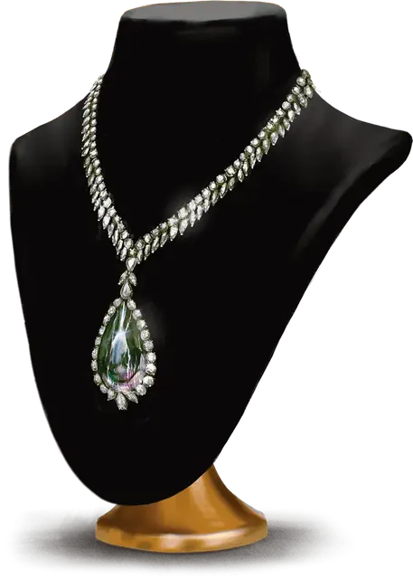

Солитер раскола (Алмаз)
Shard Solitaire (Diamond)
Чудесный предмет, легендарный (требуется настройка)

Рекомендованная стоимость от 50 001 зм
Внутри этого драгоценного камня таится нестабильный межпространственный разлом. Его грани опоясаны переливающимися прожилками, движущимися словно по собственной воле. Известно пять типов солитеров раскола, каждый из которых представляет собой отдельную разновидность драгоценных камней.
Шаг через разлом. Пока вы носите или держите в руках солитер раскола, вы можете бонусным действием телепортировать себя, а также всё, что вы носите или несёте, в незанятое пространство, которое вы можете видеть в пределах 30 футов от себя.
Когда вы используете это свойство, вы можете использовать нестабильную силу межпространственного разлома внутри камня, чтобы увеличить расстояние телепортации до 30 футов, но если вы телепортируетесь на расстояние более 30 футов используя шаг через разлом, вы должны преуспеть в спасброске Телосложения Сл 16, иначе сразу после телепортации получите 3к10 урона силовым полем.
Использование заклинаний. Камень имеет 6 зарядов и ежедневно восстанавливает 1к6 зарядов на рассвете. Действием вы можете наложить одно из заклинаний камня, потратив необходимое количество зарядов, без использования материальных компонентов (Сл спасброска 16):
град [ice storm] (3 заряда) изгнание [banishment] (3 заряда; цель изгоняется в межпространство внутри камня на время действия заклинания), отражения [mirror image] (1 заряд), подобие [simulacrum] (6 зарядов; копия, созданная заклинанием, имеет то же количество хитов, что и существо, которое она имитировала).
Варианты этого предмета: Чёрный сапфир • Алмаз • Гранат • Радужный жемчуг • Рубин